じゅんび
今日は micro:bit（マイクロビット）という小さなコンピュータで、最後には「動きを見分ける AI」を自分で作ります。自分のペースで STEP を進めてください。終わった手順はクリックするとチェックが付きます。
手順
- USB ケーブルで micro:bit とパソコンをつなぐmicro:bit の裏の黄色い LED が光れば OK
- MakeCode を開くブラウザは好きなもので OK。ただし Safari・Firefox は micro:bit に直接つなげず、後半の CreateAI も使えません（理由は STEP 6）
- 「新しいプロジェクト」を押し、名前を付けて「作成」例：
hello。本名は入れないでおこう - 「ようこそ！」の案内が出たら × で閉じる（読んでも OK）
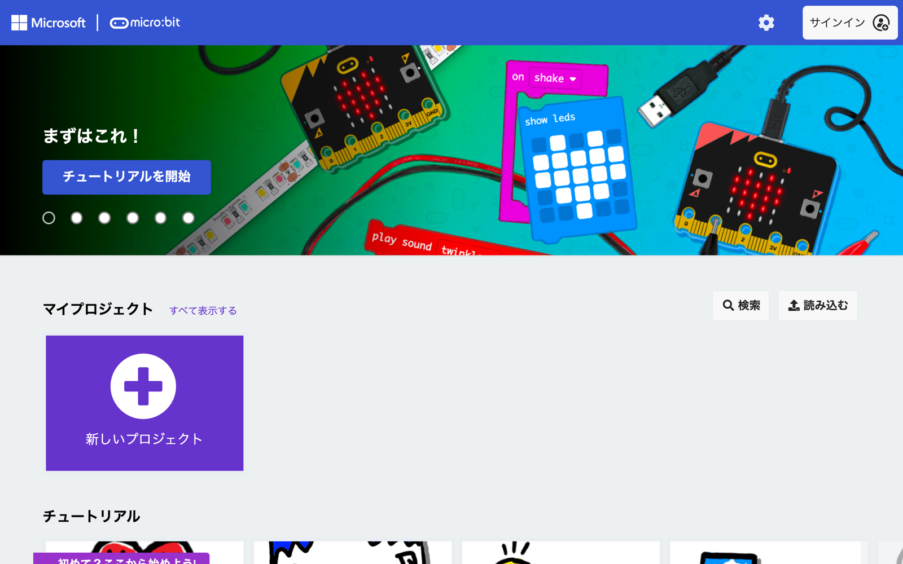
MakeCode の画面
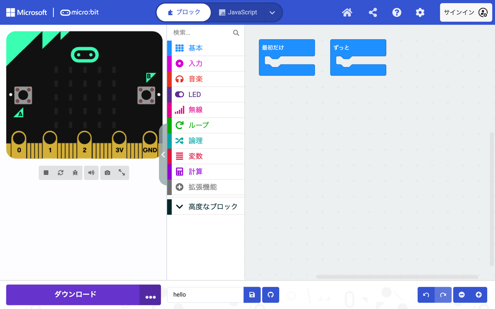
| 場所 | 何をするところ？ |
|---|---|
| 左：シミュレーター | 画面の中の micro:bit。プログラムがすぐ動く |
| 真ん中：ブロックの棚 | 「基本」「入力」「LED」など、色ごとにブロックが入っている |
| 右：作業エリア | ブロックを並べてプログラムを作る。最初から「最初だけ」「ずっと」がある |
| 左下：ダウンロード | 作ったプログラムを本物の micro:bit に書き込む |
つまずいたら：USB をつないでも何も光らない
LED で自己紹介
作るプログラム
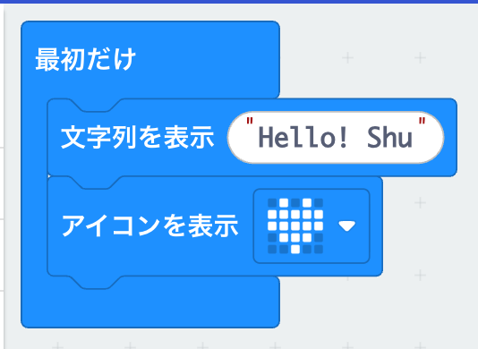
手順
- 「基本」から 文字列を表示 を「最初だけ」の中に入れる
- "Hello!" の後ろに自分の名前（ローマ字）を書くLED は日本語を表示できません
- 「基本」から アイコンを表示 を下につなげ、好きなアイコンを選ぶ
- 左のシミュレーターで動きを確認する
- ダウンロードの横の 「…」→「デバイスを接続する」で micro:bit とつなぐ一度つなげば、次からは「ダウンロード」だけで書き込めます
- 「ダウンロード」を押して、本物の micro:bit に名前が流れたら成功！
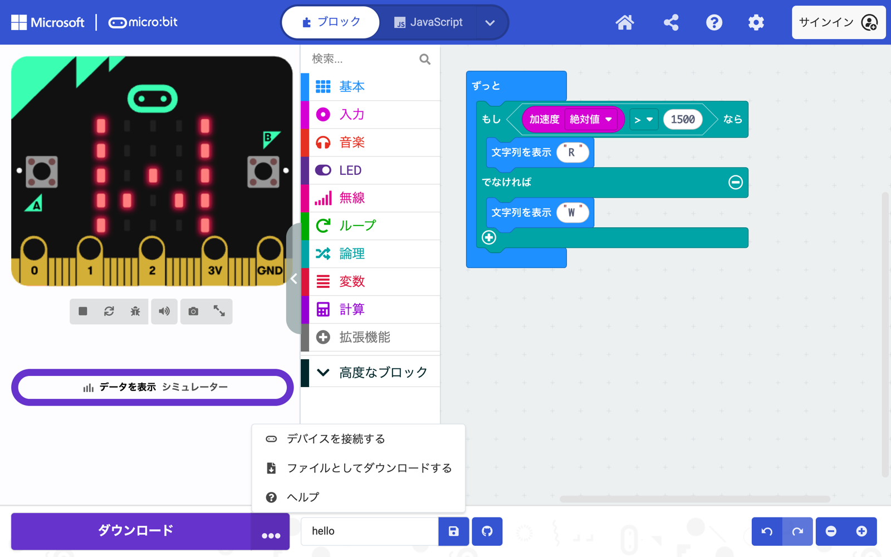
うまく組めない人へ：Python でコピーする
画面上の「JavaScript ▾」の ▾ から Python を選び、中身を全部消して貼り付け → 「ブロック」に戻ると、ブロックに変わります。
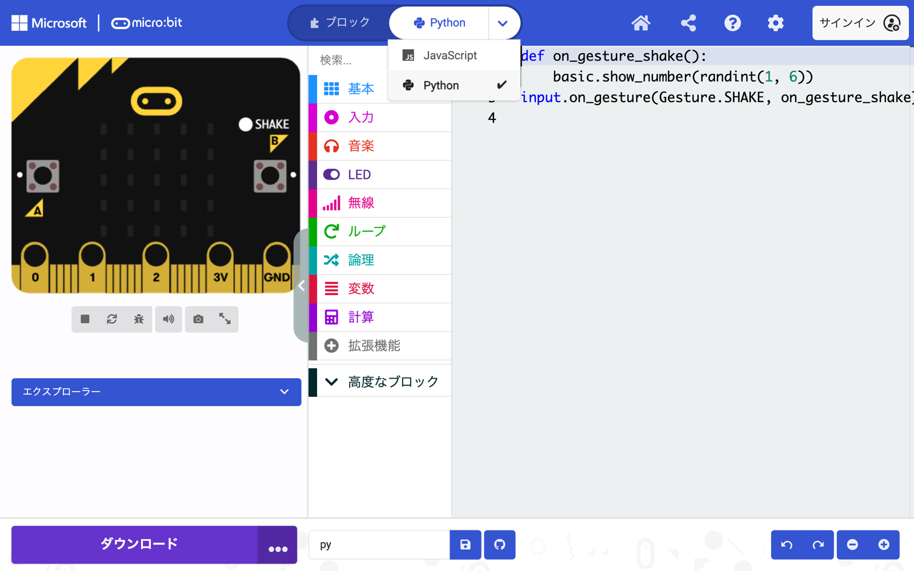
つまずいたら：「デバイスを接続する」が失敗する
.hex ファイルを、Finder で MICROBIT というドライブにドラッグすれば書き込めます。次の条件を全部満たすプログラムを作ろう。
- 電源を入れると、名前が 1 回だけ流れる
- 名前のあと、自分で描いた 5×5 のドット絵が表示される（「基本」の棚の、マス目をクリックして描けるブロックを使う）
- ボタン A を押すと、もう一度名前が流れる
- ボタン B を押すと、ドット絵に戻る
確認：シミュレーターで A・B を交互に押して、どちらも思い通りに動けばクリア。
センサーで反応させる
micro:bit には、ボタン・加速度センサー（動き）・明るさセンサー・温度センサーなどが入っています。「○○したら、△△する」をつくってみよう。
2-1 振ったらサイコロ
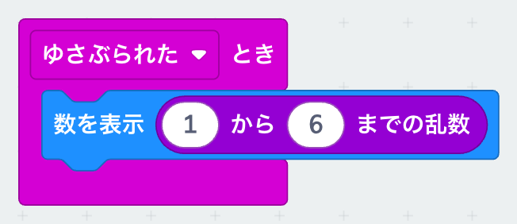
- 「入力」から ゆさぶられたとき を出す
- 「基本」の 数を表示 を中に入れる
- 「計算」の 0 から 10 までの乱数 を数の所にはめて、1〜6 に変える
- シミュレーターの「SHAKE」で試して、本物に書き込んで振ってみる
Python でコピーする
2-2 ボタンで切りかえ
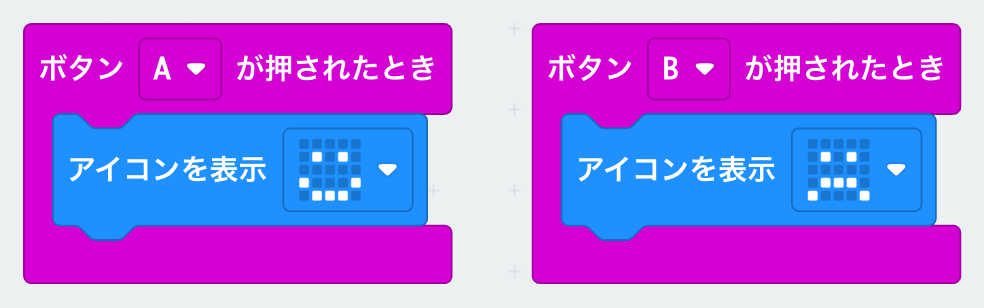
- 「入力」の ボタン A が押されたとき → 笑顔のアイコン
- もう 1 つ出して B に変える → 悲しい顔のアイコン
Python でコピーする
2-3 暗くなったら光る
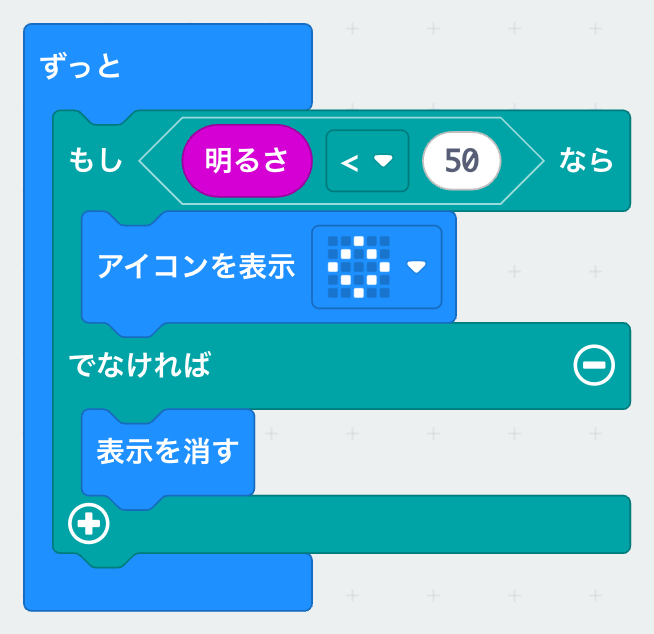
- 「基本」の ずっと の中に、「論理」の もし〜なら〜でなければ を入れる
- 条件を「入力」の 明るさ
< 50にする（「論理」の比較ブロックを使う） - 暗いときはアイコン、明るいときは「表示を消す」にする
- 本物で micro:bit の LED 面を手でかくして試す
Python でコピーする
2-1 のサイコロを改造して、次の条件を全部満たそう（micro:bit V2 はスピーカー内蔵）。
- 出た目を「変数」の棚で作った変数
目に入れてから表示する - 振ると、数字が出る前に短い音が 1 回鳴る（「音楽」の棚）
- 6 が出たときだけ、特別なメロディが鳴る（「論理」の もし と
目 = 6を使う） - 1〜5 のときはメロディが鳴らない
確認：何回か振って、6 のときだけメロディが鳴ればクリア。
2-3 を改造して、明るさで 3 段階に変わるライトを作ろう。
- まず、ボタン A を押すと今の明るさの数字が表示されるようにする
- 教室の明るさ・手でかくした明るさを測って、2 つのしきい値（境目の数字）を自分で決める
- 暗い → 全部点灯 ／ 少し暗い → ハート ／ 明るい → 消える、の 3 段階にする（「もし〜なら〜でなければもし」を使う）
確認：手のかくし方を変えて、3 段階が切りかわればクリア。決めたしきい値と理由をメモしておこう。
動きはデータ
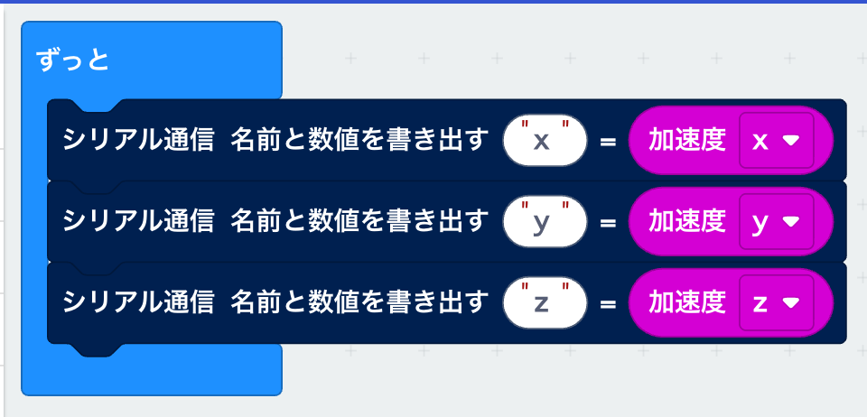
3-1 加速度の数字の意味
単位は「ミリG」
1G ＝ 地球の重力 1 つ分。その 1000 分の 1 が 1 ミリG です。micro:bit では 約 1023 ≒ 1G。
止まっていても重力がかかっているので、下を向いた方向に約 1023 が出ます。かたむけると、その 1023 が x・y・z に分かれます。そのため、かたむけるだけなら値は −1023〜1023 の間になります。
強く振ると重力以外の力も加わるので、1023 をこえる値も出ます。
x・y・z は向き
- x：左右（A ボタン ↔ B ボタン）
- y：前後（ロゴ側 ↔ 端子側）
- z：上下（画面の表 ↔ 裏）
| 置き方 | x | y | z |
|---|---|---|---|
| 画面を上にして机に平らに置く | 約 0 | 約 0 | 約 −1023 |
| A ボタン側・B ボタン側にかたむける | −1023〜1023 に変わる | 約 0 | 0 に近づく |
| ロゴ側・端子側にかたむける | 約 0 | −1023〜1023 に変わる | 0 に近づく |
平らに置いたときの値は MakeCode 公式の説明より。かたむけたときの＋とーの向きは、グラフで自分で確かめよう。
3-2 グラフで見る
- 上のプログラムを作る（Python のコピーでも OK）
- 本物の micro:bit に書き込む
- 平らに置く → 左右にかたむける → 前後にかたむける をして、上の表と同じになるか確かめる
- シミュレーターの下に出る 「データを表示 デバイス」 を押すx・y・z の 3 本のグラフが動き出します（「シミュレーター」の方は画面の中の micro:bit のデータ）
- micro:bit を持って ゆっくり歩く・小走り・止まる をしてみて、グラフの違いを見る
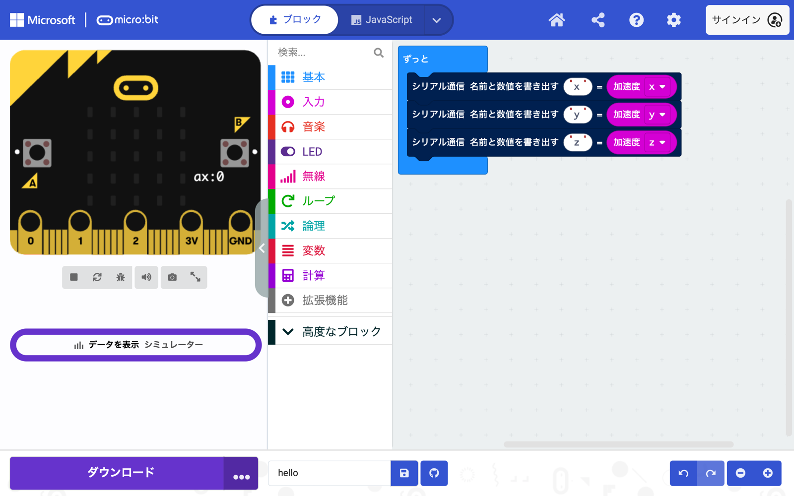
Python でコピーする
かたむけると LED の点が動く「水平器」を作ろう。
- 平らに置くと、真ん中（x 2・y 2）の点が 1 つだけ光る
- B ボタン側にかたむけると点が右へ、A ボタン側にかたむけると左へ動く
- 加速度 x（−1023〜1023）を、LED の列番号（0〜4）に変える。「計算」の棚の マップ ブロックを使う
- 前後のかたむき（y）でも、点が上下に動くようにできたら完成
ヒント：毎回「表示を消す」してから「点灯」しないと、点が線になってしまいます。
ルールで見分けてみる
STEP 3 で見たグラフをヒントに、走っているときは「R」、歩いているときは「W」を表示するプログラムを作ってみよう。
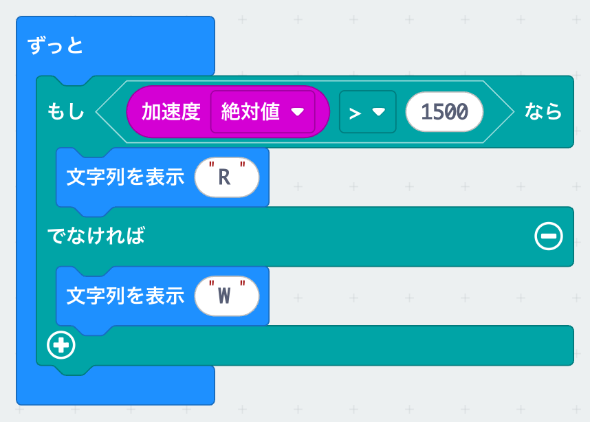
1500 なら 文字列を表示 R でなければ W">- 1500 の所に入る数字を予想して入れる
- 本物に書き込んで、歩く・走るで試す
- 数字を変えて何回か試す
- となりの人の micro:bit でも同じ数字でうまくいくか試す
Python でコピーする
- ぴったりの数字は見つかった？
- 人によって、持ち方によって、同じルールでうまくいく？
- 「スキップ」「ジャンプ」も見分けたくなったら、ルールはどうなる？
- 止まる「S」・歩く「W」・走る「R」の 3 つを表示する
- しきい値（境目の数字）は 2 つ。STEP 3 のグラフで自分で測って決める
- 「もし〜なら〜でなければもし〜でなければ」を使う
- となりの人に使ってもらい、何回中何回当たったか数える
機械学習ってなに？
ルールで書く（STEP 4）
人間が「絶対値 > 1500 なら走る」と決まりを考えて書く。
決まりが複雑になると書けない。人によって合わない。
機械学習（これから）
人間は「これが歩く」「これが走る」という見本（データ）を見せるだけ。決まりはコンピュータが見つける。
見本の質と量で、かしこさが決まる。
機械学習の 4 ステップ
今日使う micro:bit CreateAI は、この ①〜④ をブラウザだけで体験できるツールです。CreateAI の画面にも「接続 → データを集める → モデルをテスト → コードを書く → 使用」の順番が出てきます。
micro:bit チャンピオンって知ってる？
micro:bit を使った学びを広げる人たちが、毎年「micro:bit チャンピオン」に選ばれています。日本にもチャンピオンがいて、学校の授業や CoderDojo、イベントなどで micro:bit の楽しさを伝えています。
インタビューを読む ↗
インタビューを読む ↗
CreateAI でモデルを作る
- 使えない：Safari、Firefox
- 使える：Chrome、Edge
- たぶん使える：Arc など Chrome と同じしくみのブラウザ。つながらなければ Chrome に切りかえよう（Brave は設定でオフになっていることが多い）
6-1 何を見分ける？ を決める
2 人で相談して、2〜3 種類の動きを決めよう。迷ったら下の例から。
| テーマ | 動き |
|---|---|
| 歩く・走る | 止まる ／ 歩く ／ 走る |
| 手のジェスチャー | 手をふる ／ 拍手 ／ 何もしない |
| スポーツ | 素振り ／ ジャンプ ／ 立つ |
6-2 つなぐ
- 「新しいプロジェクト」→「プロジェクトを作成」
- 「CreateAI のやり方」が出たら「接続」を押す
- 必要なもの（micro:bit・パソコン・USB ケーブル・電池ボックス）を確認して「次」
- USB でつないで「次」→ 出てきたポップアップで micro:bit を選んで「接続」データ集め用のプログラムが micro:bit に書き込まれます
- USB を外して電池ボックスをつなぐ
- micro:bit の LED に出た模様を、画面のマス目に入力してペアリングする
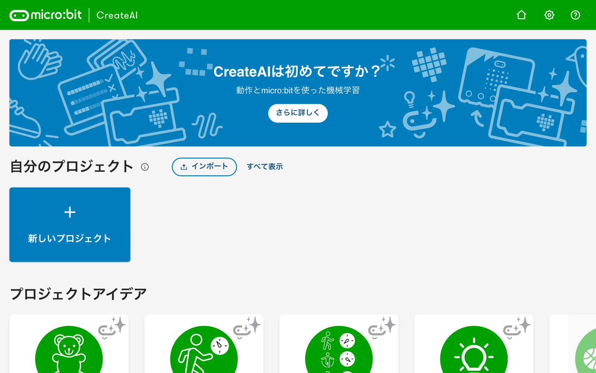
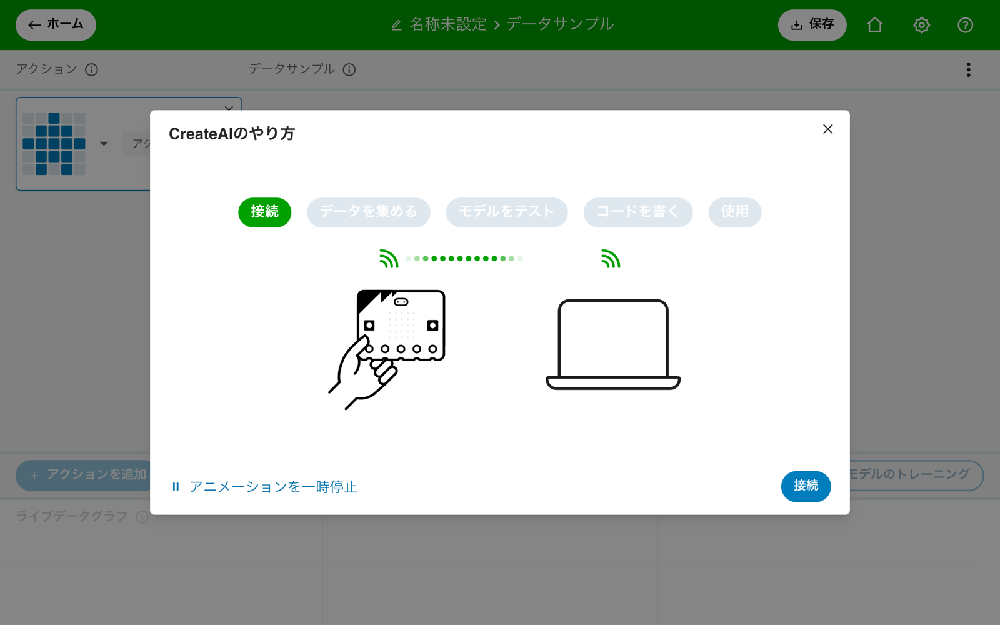
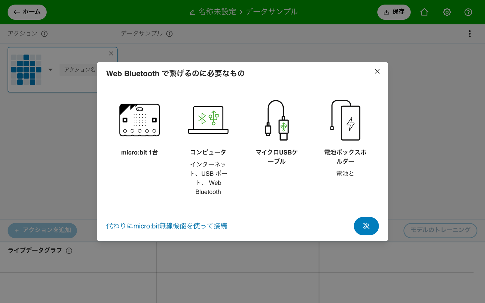
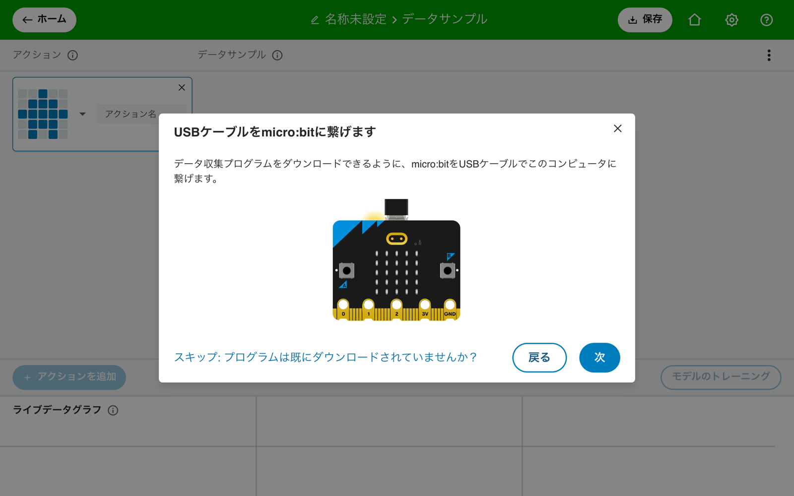
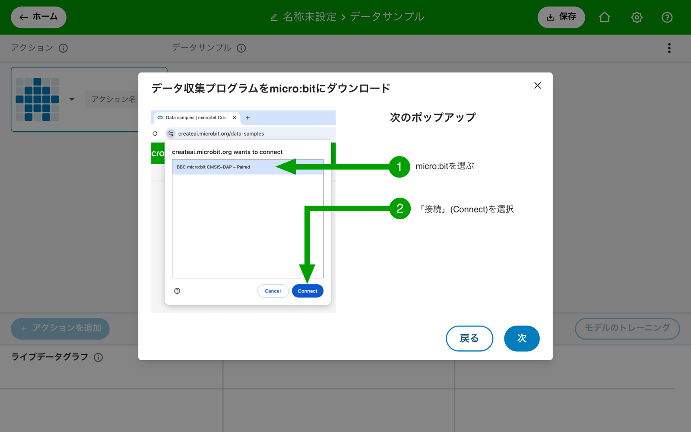
6-3 データを集める
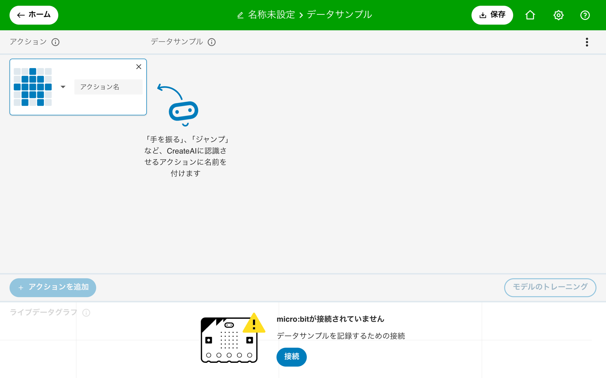
- 「アクション名」に 1 つ目の動きの名前を入れる（例：歩く）。左のマス目のアイコンも選べる
- 赤い「記録」ボタンを押して動く。1 つの動きにつき 10 回以上記録する1 人が動く役、1 人が記録する役。micro:bit の B ボタンでも記録を始められます
- 「アクションを追加」で次の動きも同じように集める
- 変な記録（動きそこねた等）は、グラフの右上の × で消す
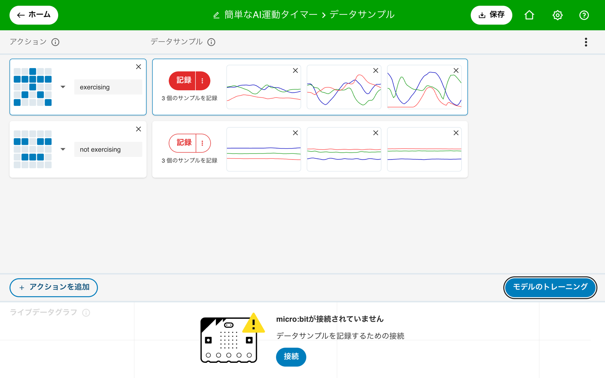
6-4 トレーニング → テスト
- 右下の「モデルのトレーニング」→「トレーニング開始」を押す
- 「モデルのテスト」画面になったら、micro:bit を付けて動いてみる
- 動きごとの確実性（％）と、右下の推定アクションが合っているか確かめる確実性が「認識ポイント」の線をこえると、その動きだと判定されます
- まちがえる動きがあったら、左上の「データサンプルを編集」で戻ってデータを足し、もう一度トレーニングする
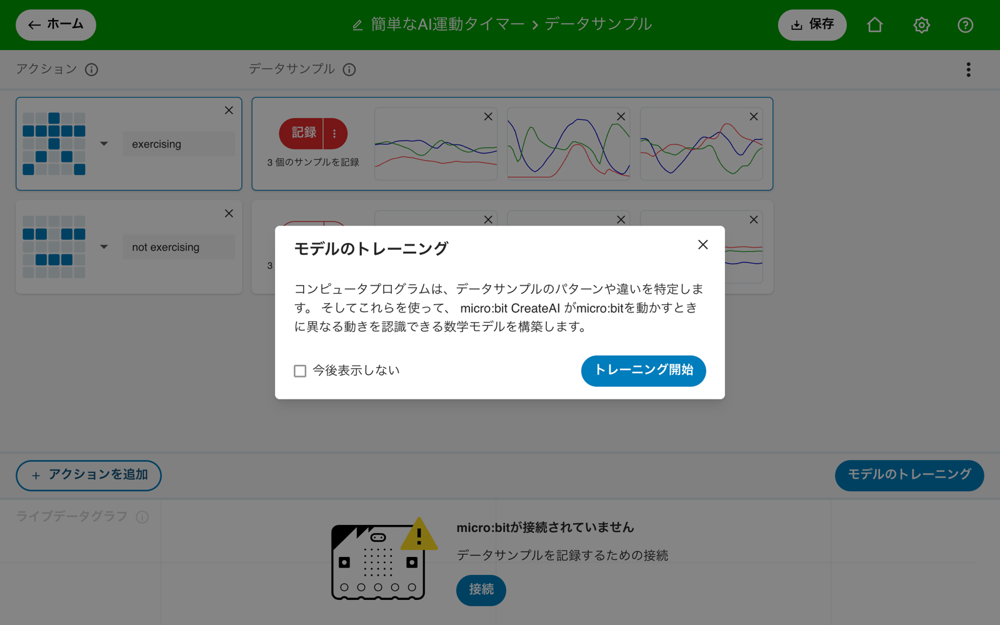
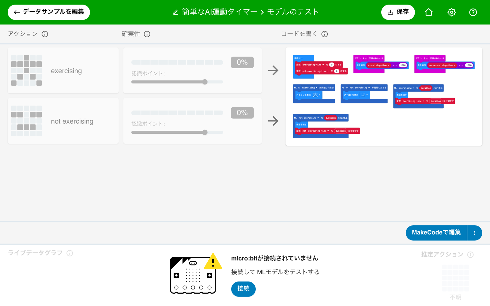
つまずいたら：ペアリングがうまくいかない
つまずいたら：Bluetooth の画面が出ない・micro:bit が一覧に出ない
つまずいたら：途中で接続が切れた
他の人が使うと？
- となりのペアと micro:bit を交換して、相手の AI を試す
- うまく見分けられた動き・まちがえた動きを記録する
- なぜ、作った本人だと当たって、他の人だとまちがえるの？
- もし「大人の男性のデータ」だけで作った AI を、子どもやお年寄りが使ったら？
- あなたの「歩き方」のデータは、あなたを見分ける手がかりになる？ ＝ 個人情報になる？
AI をプログラムに組み込む
STEP 6 で作ったのは「動きを見分けるしくみ（モデル）」だけです。ここでは、見分けたあとに何をするかをプログラムで決めて、モデルと一緒に micro:bit に入れます。
8-1 MakeCode を開く
- 「モデルのテスト」画面の右下「MakeCodeで編集」を押す
- MakeCode が開いて説明が出たら「閉じる」左上の「<」は CreateAI に戻るボタン。モデルを直したいときに使います
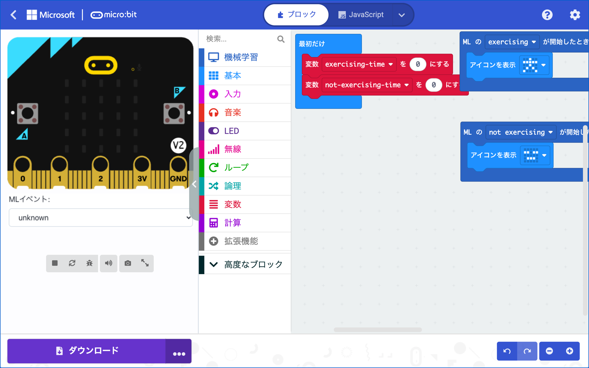
8-2 ブロックを読む
| ブロック | いつ動く？ |
|---|---|
| ML の ○○ が開始したとき | AI が「○○ の動きが始まった」と判定したとき |
| ML ○○ を duration (ms)停止 | その動きが終わったとき。duration に続いた時間（ミリ秒）が入る |
最初は、CreateAI で選んだアイコンを表示するだけのプログラムになっています。
8-3 シミュレーターで試す → 改造する
- シミュレーターの下の「MLイベント」で動きを選ぶと、その動きが起きたことにして試せる
- 「ML の ○○ が開始したとき」の中身を変える例：アイコンを変える ／「音楽」の棚で音を鳴らす
- 「機械学習」の棚を開いて、ほかにどんなブロックがあるか見てみる
8-4 micro:bit に入れて試す
- USB でつないで「ダウンロード」→ 画面の指示どおりに進めるモデルとプログラムが一緒に micro:bit に入ります
- USB を外して電池ボックスをつなぎ、体に付けて動いてみる
- 判定がイマイチなら、左上の「<」で CreateAI に戻ってデータを足す → トレーニング → もう一度 MakeCode へ
次の条件を全部満たそう。
- 変数
回数を作り、「最初だけ」で 0 にする - 動き（例：走る・ジャンプ）を検知するたびに
回数が 1 増える - ボタン A を押すと
回数を表示する - ボタン A と B を同時に押すと
回数が 0 に戻る 回数が 10 の倍数になったら音が鳴る（「計算」の あまり を使う）
確認：実際に 10 回動いて、音が鳴るか・回数が合っているか確かめよう。
つまずいたら：「MakeCodeで編集」ボタンがない
誰の何を助ける？
12/7 からのN1 に届くモノづくりにつながるアイデア出しです。思いつくだけ書いてみよう。
振り返り
提出・片付け
10-1 作ったプログラムのリンクを取る
- STEP 8 の MakeCode（AI 入り）の画面で、共有ボタン（つながった 3 つの丸）を押すCreateAI から開いた MakeCode に共有ボタンがないときは、左上の「<」で戻り、CreateAI の「保存」でファイルを保存してスタッフに相談
- プロジェクト名を確認して「プロジェクトを共有」を押すリンクを知っている人は誰でも見られるようになります。プロジェクト名に本名を入れないでおこう
- 出てきたリンクをコピーして、下の欄に貼る
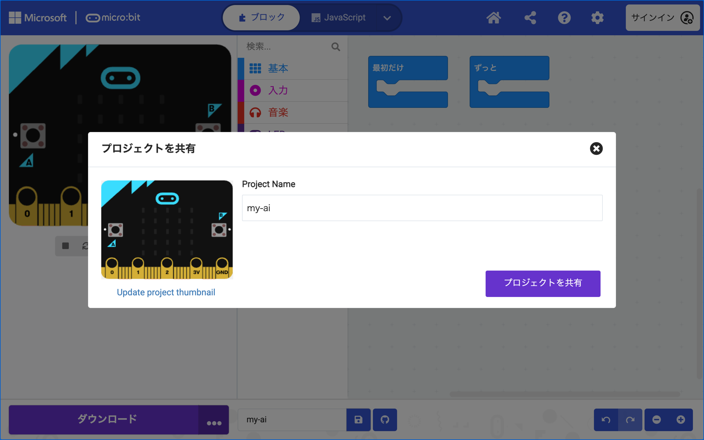
10-2 フォームで提出
- 下のボタンを押すこのサイトで書いたメモとリンクが入った状態で、Google フォームが開きます
- メールアドレスの欄にチェックを入れ、内容を確認して「送信」を押す送信を押すまでは提出されていません！
うまく開かないとき：メモを全部コピーして貼る
メモがとても長いと、フォームに自動で入らないことがあります。そのときは下のボタンでコピーして、フォームに貼り付けてください。